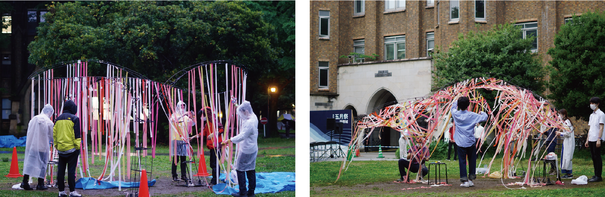

変容の器
2022
共同制作：五月祭建築学科パビリオン2022（学部生有志）
主な役割：主責任者，基本設計，施工手順最適化
建築学科有志によって第95回五月祭で建設，展示した建築学科パビリオン．3本のロッドが互いに触れ合わずに片持ちで4 mずつ迫り出し，その間を繋ぐ曲面がメビウスの帯を成している．炭素繊維補強プラスチックを間隔を保って束ねたベンディングアクティブロッドによって全体で約7 kgの軽量構造を実現している．
材料・部材から建築への変容をテーマに，高々と掲げたロッドを徐々に曲げながら引き下ろして形状を作っていく過程を設計した．
写真撮影：伊藤大翔
keywords
パビリオン，ベンディングアクティブ構造，最適化，グラフ理論
発表
上條陽斗, 中川慶人, 平林一成, 田崎祥.

Rhinoceros+GrasshopperのプラグインKangaroo2とK2 Engineeringを用いてシミュレーションと形態創生を行った．左図は最適化によってリボンに加わる張力の均等化を行っている様子（担当：中川慶人），右図は単純化したモデルによってリボンの張力に対抗できるロッド形状を手動で形態生成している様子（担当：上條陽斗）
多数のリボンをリボンを張っていく際に作業者が互いに干渉せずに作業できるようにしたいと考えた．リボンを複数のグループに分けて順に施工していき，それぞれのグループ内でリボンが交差を持たないという問題を考える．この問題は，グラフ理論から，頂点彩色問題という問題に置き換えることができる．207本のリボンを11グループに分ける施工手順を計画した．
- 
高々と掲げたロッドを徐々に曲げて引き下ろしながら施工していった．